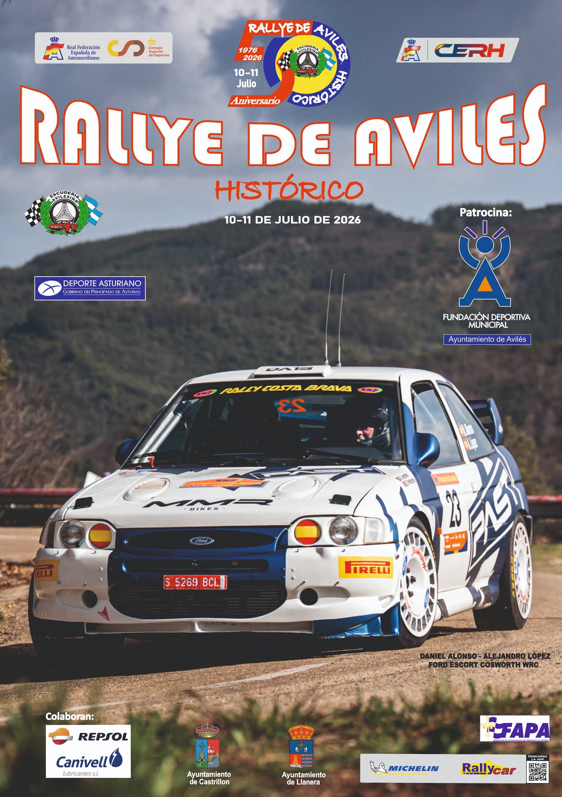
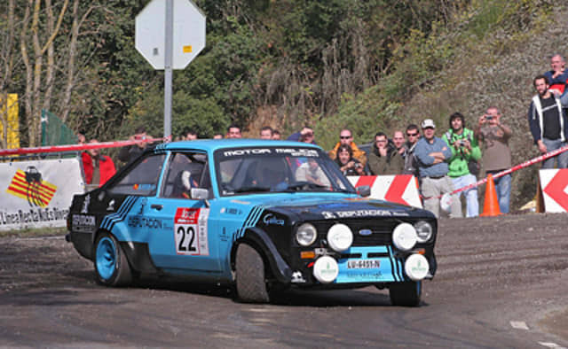
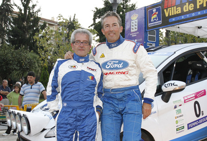
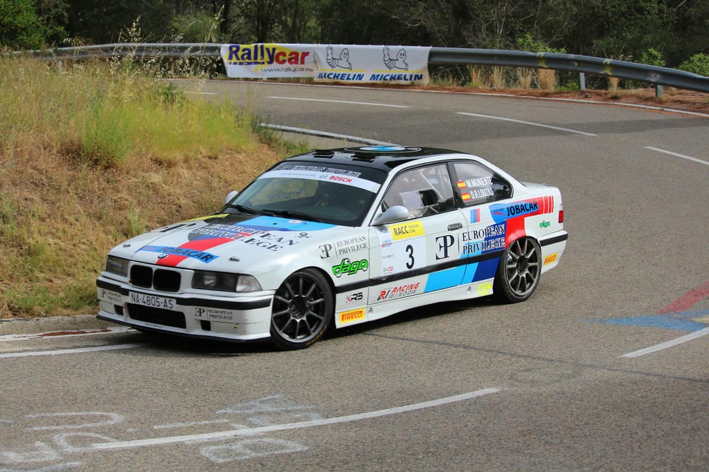
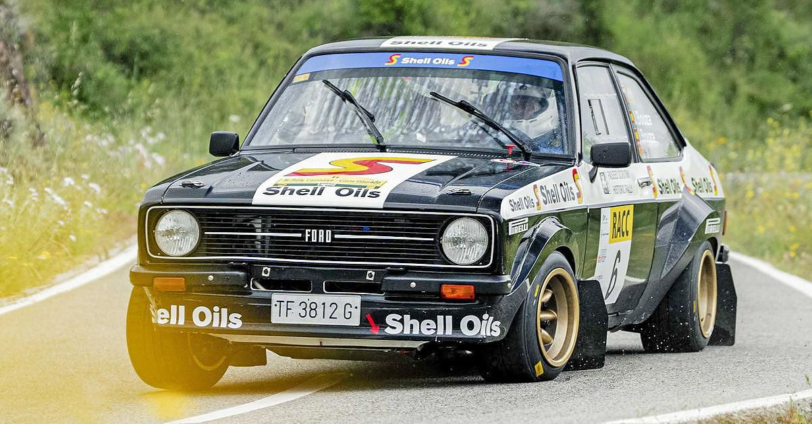
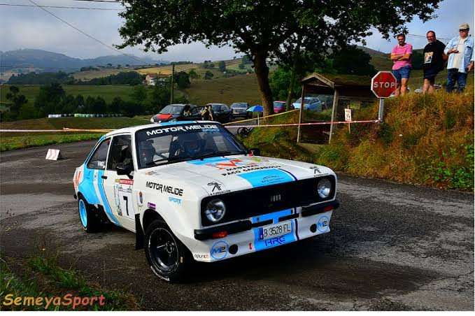
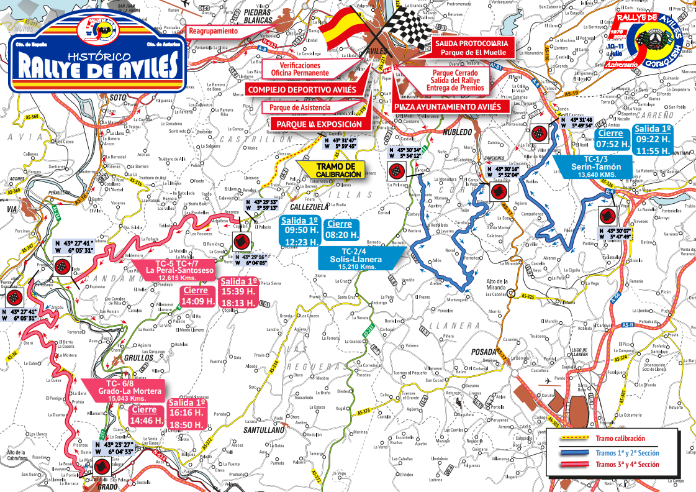

Campeonato de España de Rallyes Históricos
50 Edición del Rallye de Avilés Histórico
El Rallye de Avilés nació de la gran afición al motor que hay en Asturias y se convirtió pronto en una carrera muy conocida del norte de España. Todo esto es posible gracias a la Escudería Avilesina, el club local que organiza la prueba desde el principio con mucho trabajo y dedicación.
Este año el rallye celebra su edición número 50, una fiesta muy especial que reúne a los mejores coches clásicos de carreras del país. Durante el evento, las carreteras de la comarca vuelven a llenarse de ambiente para disfrutar del espectáculo y del sonido de estos vehículos históricos.

- Tramos cronometrados
- 8
- Kilómetros de tramo
- 113
- Equipos inscritos
- 74
- Días de rallye
- 2
Así se vivió la 50 edición
Resumen en vídeo
Los mejores momentos del fin de semana
Entrevista al ganador
El equipo vencedor cuenta cómo fue la carrera.
Resumen Completo del Rally
Escucha el resumen completo de la entrevistas hechas a los pilotos mas destacados de esta edición.
Equipos ganadores
Ganadores de las ultimas 5 ediciones.
| 46ª Edición | 47ª Edición | 48ª Edición | 49ª Edición | 50ª Edición |
 |
 |
 |
 |
 |
| Xesús Ferreiro - Javier Anido | Daniel Alonso - Zacarías Llamas | Javier - Iván Bouza | Xesús Ferreiro - Javier Anido | Xesús Ferreiro - Javier Anido |
Itinerario y horarios
| Hora | Actividad | Lugar |
|---|---|---|
| 10:00 – 13:00 | Entrega de documentación | Escudería Avilesina |
| 16:00 – 19:30 | Verificaciones técnicas | Complejo Deportivo de Avilés |
| 20:00 | Ceremonia de salida | Plaza Pedro Menéndez |
| 20:15 – 21:00 | Parque cerrado | Plaza de España |
| Hora | Actividad | Distancia |
|---|---|---|
| 08:30 | Salida del rallye Plaza de España | – |
| 09:22 | TC1 · Serín-Tamón | 13,640 km |
| 09:50 | TC2 · Solís-Llanera | 15,210 km |
| 10:30 | Reagrupamiento Piedras Blancas | 20 min |
| 11:55 | TC3 · Serín-Tamón | 13,640 km |
| 12:23 | TC4 · Solís-Llanera | 15,210 km |
| 13:03 | Reagrupamiento Piedras Blancas | 20 min |
| 15:39 | TC5 · La Peral-Santoseso | 12,615 km |
| 16:06 | TC6 · Grado-La Mortera | 15,043 km |
| 17:02 | Reagrupamiento Piedras Blancas | 15 min |
| 18:13 | TC7 · La Peral-Santoseso | 12,615 km |
| 18:50 | TC8 · Grado-La Mortera | 15,043 km |
| 19:50 | Final del rallye Plaza de España | – |
| 21:00 | Entrega de trofeos podio | – |
Mapa de los tramos

-
Serín-Tamón
TC1 y TC3 · 13,640 km
-
Solís-Llanera
TC2 y TC4 · 15,210 km
-
La Peral-Santoseso
TC5 y TC7 · 12,615 km
-
Grado-La Mortera
TC6 y TC8 · 15,043 km